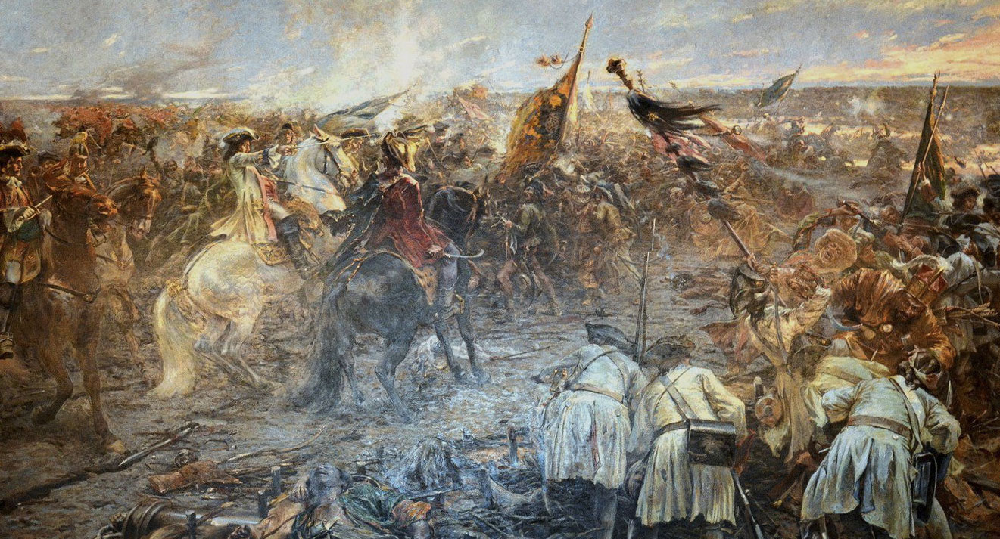
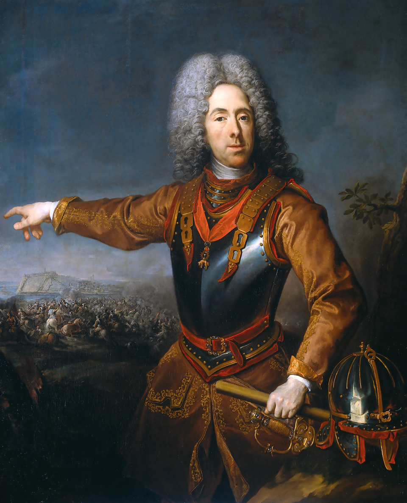
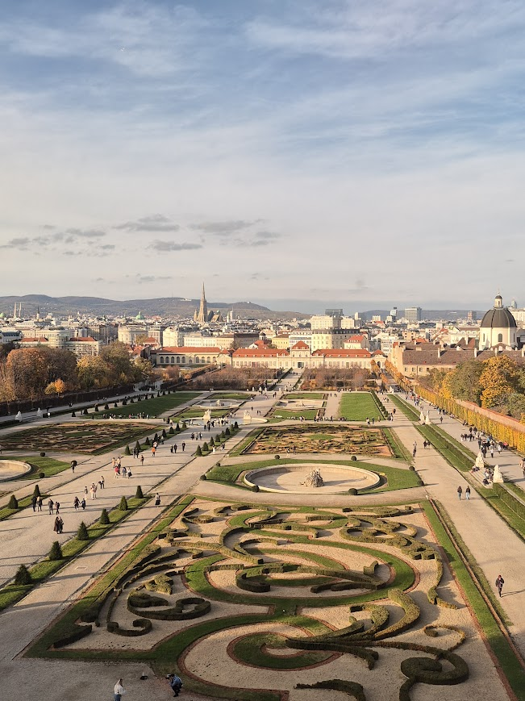
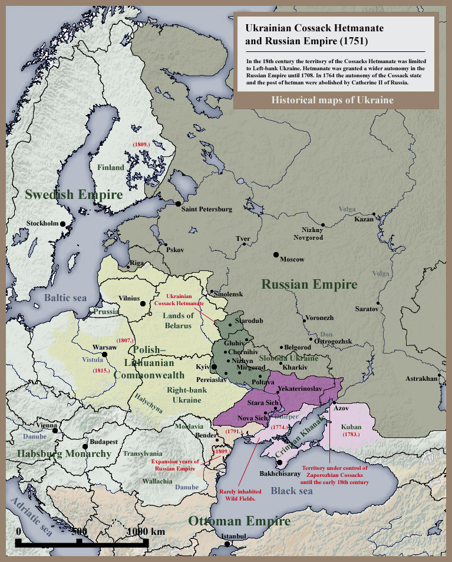
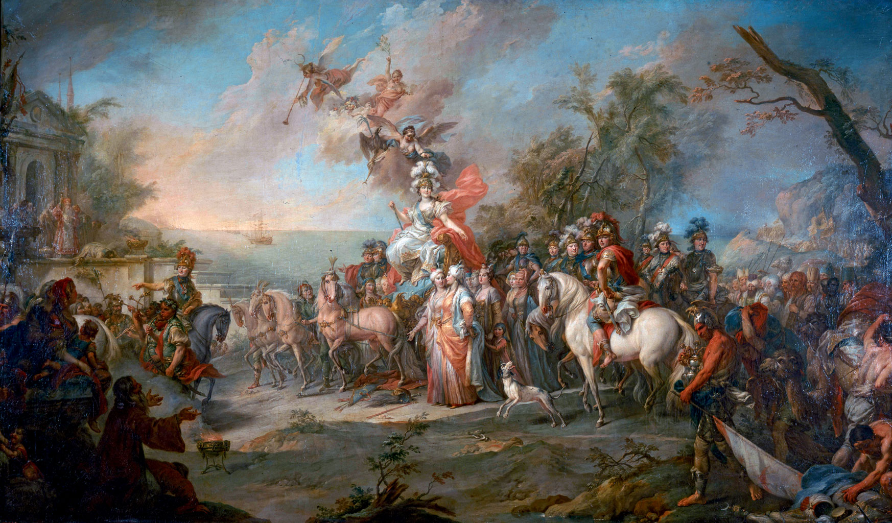
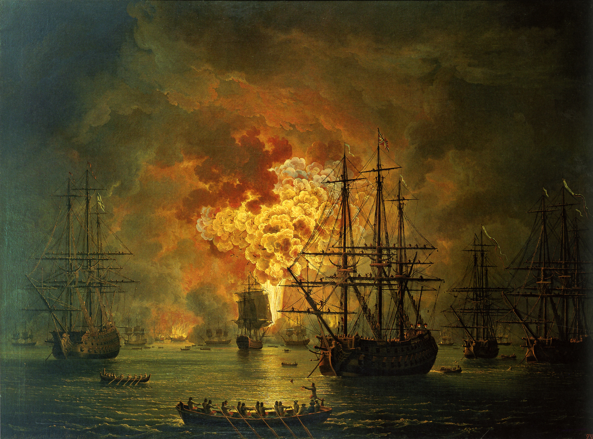
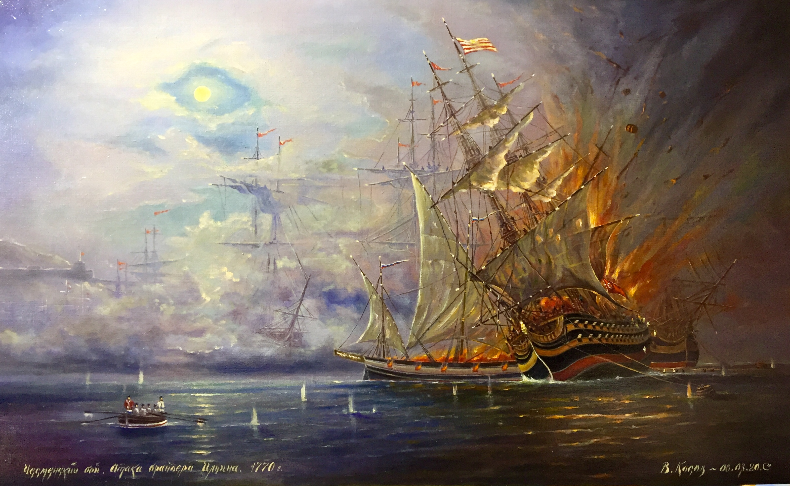
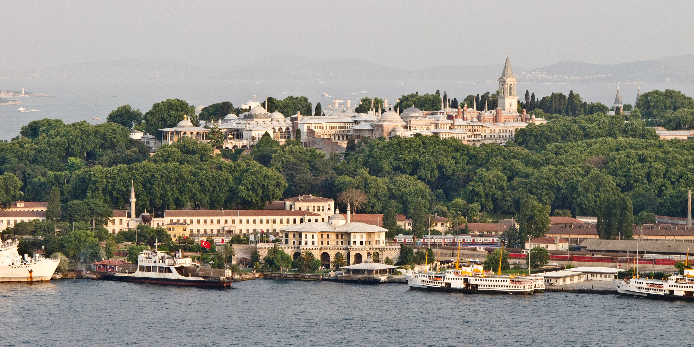
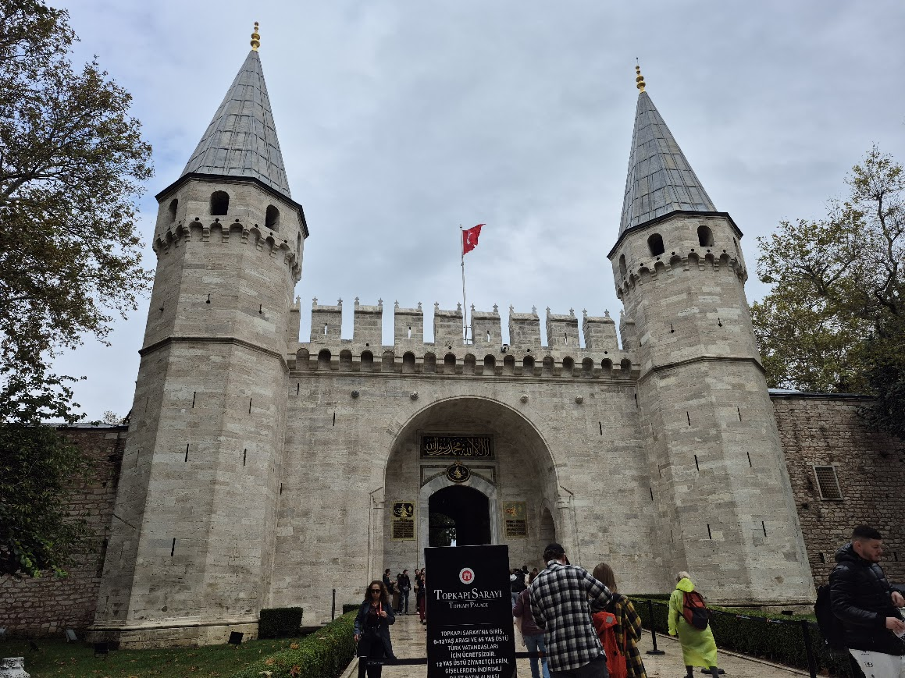
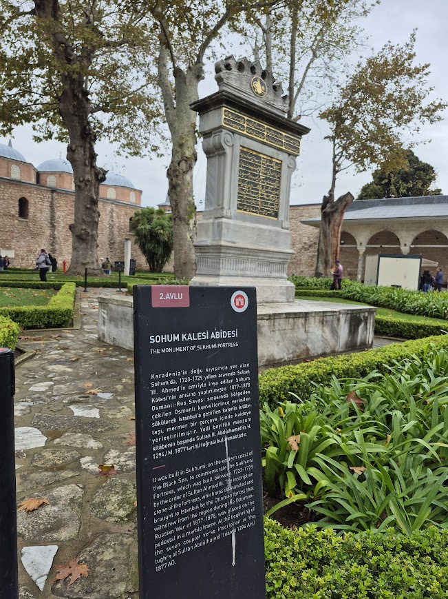

이스탄불 여행 (6) - 마침내 뚫린 보스포러스
게시: 2025-12-18T06:30:21+09:00
모든 문명과 국가는 흥망성쇠를 겪습니다. 약 300년간 온 유럽을 벌벌 떨게 만들던 오스만 투르크도 그 운명을 피해갈 수는 없었습니다. 1683년 시작되어 1699년까지 16년간 이어진 일련의 전쟁은 오스만 투르크 역사에서 '재난의 기간', 독일에서는 투르크 대(大)전쟁(Großer Türkenkrieg)이라고 불리는데, 합스부르크와 폴란드-리투아니아 연방, 베니스, 그리고 러시아가 오스만 투르크를 상대로 벌인 것이었습니다. 이 전쟁의 끝은 1699년의 칼로비츠(Karlowitz) 조약이었는데, 이 조약을 정점으로 하여 오스만 투르크는 더 이상 유럽에게 위협적인 공세를 펼치지 못했고, 이제 수세에 몰려 서서히 허물어지게 됩니다.

(이 그림은 지금의 세르비아 영토인 젠타(Zenta)에서 벌어진 합스부르크와 오스만 투르크의 전투를 그린 것입니다. 이 젠타 전투에서 합스부르크군은 병력 수와 화력면에서 모두 불리했음에도 불구하고 오스만 투르크군을 대파하는 기염을 토합니다. 이 전투는 투르크 대전쟁의 방향을 사실상 결정짓습니다.)

(이 젠타 전투를 대승으로 이끈 것이 바로 사보이 대공 오이겐(Prince Eugene of Savoy)이었습니다. 그는 파리에서 태어난 프랑스 백작가 출신으로서, 프랑스 추기경 마자랭의 조카뻘이었습니다. 그가 프랑스가 아니라 오스트리아군에 입대한 이유는 그의 건강과 어머니 올림피아 만치니(Olympia Mancini)와 관련된 추문 때문에 루이 14세가 그를 프랑스군 장교로 임관시키는 것을 거부했기 때문이었습니다. 그로 인해 루이 14세에게 앙심을 품은 오이겐은 부르봉 왕가의 경쟁자인 합스부르크로 찾아간 것이지요.)

(오이겐 대공은 여러 업적을 남겼지만 가장 유명한 것은 지금 클림트 그림을 다수 전시해놓고 있는 미술관인 빈의 벨베디어(Belvedere) 궁전을 지었다는 것입니다. 오이겐 대공은 장수했지만 자식을 남기지 않아 벨베데레 궁전은 그의 조카딸에게 상속되었는데, 파리에 살던 그의 조카딸은 낭비벽이 심한데다 멀리 빈에 있는 궁전, 그것도 온갖 유지비만 잔뜩 들어가는 궁전을 유지할 형편이 안 되어 이 궁전을 곧 팔아버려야 했습니다. '멀리 있어서 관리가 안 되는 부동산은 절대 사지 마라'는 투자 격언이 입증된 사례입니다. 이 벨베디어 궁전 사진은 이번 여행 때 제가 찍은 것입니다.) 젠타 전투를 보더라도 오스만 투르크의 기세를 꺾어놓은 주역은 분명히 합스부르크였습니다만, 정작 오스만 투르크의 몰락에서 가장 많은 것을 얻어간 나라는 바로 러시아였습니다. 17세기 말부터 표트르 1세의 개혁을 통해 조금씩 팽창하던 러시아는 무너져가는 오스만 투르크를 집요하게 괴롭히며 공격을 가했는데, 그렇게 오스만 투르크를 집중적으로 두들긴 이유는 서쪽의 폴란드와 남서쪽의 합스부르크가 너무 강대해서 상대적으로 남쪽의 오스만 투르크가 만만했기 때문이기도 했지만, 특히 바다 때문이었습니다. 표트르 1세가 네덜란드 조선소에서 일하면서 서구 문물을 받아들였듯이, 러시아로서는 강대국으로 커나가기 위해서는 바다로 진출하는 것이 꼭 필요했습니다. 그러나 추운 북쪽 나라 러시아는 아무리 노력해도 얻을 수 있는 항구는 겨울이면 얼어붙는 차가운 발트해의 항구들 뿐이었습니다. 그런 러시아에게 저 남쪽에 있는 흑해는 그야말로 군침이 흐르는 약속의 바다였습니다. 하지만 당시 흑해는 여전히 오스만 투르크의 호수였습니다. 합스부르크에게 밀려 트란실바니아와 왈라키아(루마니아)를 사실상 잃고 이미 몰락의 길을 걷고 있던 오스만 투르크였지만, 도나우강 하류 등 흑해 연안은 완벽하게 세력권 아래 두고 있었던 것입니다. 특히나 모두가 탐내던 크림 반도와 아조프해 일대는 타타르의 크림 한국을 휘하에 둠으로써 오스만 투르크가 통제하고 있었습니다. 러시아는 지리적으로 자신과 가장 가까운 부동항인 크림 반도와 아조프해를 향해 꾸준히 마수를 뻗쳤지만, 부자가 망해도 3년은 간다더니 오스만 투르크의 저력도 만만치 않았습니다. 1735년에서 1739년까지 이어진 러시아-투르크 전쟁에서도 끝내 크림 반도 공략에는 실패했습니다. 다만 그 전쟁을 마무리 짓는 1739년의 니스(Niš) 조약에서, 성벽을 쌓아서도 안 되고 군함을 건조해서도 안 된다는 조건하에, 아조프해 해안가에 작은 항구를 건설해도 좋다는 허가를 받아냈습니다.

(이 지도는 1751년의 상황을 보여줍니다. 망해가는 오스만 투르크가 흑해 해안가를 얄미울 정도로 완벽하게 장악한 모습을 볼 수 있습니다. 러시아는 표트르 1세 이후 급팽창했지만, 여전히 부동항에 목말라 하고 있는 것이 훤히 보입니다.) 그런 정도로 만족하기에는 러시아의 야망과 잠재력은 너무나 컸습니다. 러시아는 오스만 투르크의 변방을 끊임없이 두들겼습니다. 그 줄기찬 노력이 첫 결실을 맺은 것은 다시 40년 정도가 흐른 뒤인 예카테리나 대제 시대였습니다. 1768년에서 1774년까지 이어진 러시아-오스만 투르크 전쟁에서 오스만 투르크를 있는 힘을 다해 두들겨 팬 결과, 1774년의 퀴췩 카이나르자(Küçük Kaynarca) 조약을 도출해낸 것입니다. 이 조약에서 러시아는 카프카즈 지방의 카바르디아(Kabardia)를 얻기도 했지만, 무엇보다 아조프해 연안의 지배권과 함께, 마침내 크림 반도 귀퉁이에 케르치(Kerch)와 에니칼리(Enikale)라는 두 항구를 얻었습니다. 그러나 흑해 안에서 배를 띄울 수 있게 되었다는 것만으로는 불충분했습니다. 러시아의 꿈은 흑해가 아니라, 전세계를 향해 돛을 펼치는 것이었으니까요. 그래서 러시아는 협상에서 오스만 투르크를 더욱 거세게 밀어 붙였고, 그래서 결국 러시아 상선이 보스포러스-다다넬즈 해협을 통과할 권리를 얻어냈습니다. 이건 기독교 국가의 선박이 별도 허락을 받지 않고도 술탄이 머무는 이스탄불 톱카프(Topkapı) 궁전 앞을 통과하게 된 최초의 순간이었습니다.

(이 그림은 러시아-투르크 전쟁(1768~1774)에서의 승리를 기념하는 것입니다. 천사들을 머리 위에 거느린 예카테리나 2세는 미네르바 여신으로서 개선 전차의 높은 위치에 앉아 있습니다. 행렬의 선두에서 황후의 초상화가 담긴 로켓을 목에 걸고 있는 사람은 황후의 총애를 받던 G.G. 오를로프(Orlov)입니다. 이 그림에서 가장 )

(이때 즈음해서는 러시아도 해군력을 꽤 육성했고, 그래서 발트 함대를 지중해까지 불러들여 오스만 투르크 해군과 해전을 벌이기도 했습니다. 이 그림은 1770년의 체스메(Chesme) 해전을 그린 것인데, 아나톨리아 서해안과 키오스 섬 사이에서 벌어진 이 해전에서 9척의 전열함을 주축으로 한 러시아 함대가, 16척의 전열함을 주축으로 한 투르크 함대를 완전히 박살을 냅니다.)

(당시 오스만 투르크도 유럽식 전열함을 가지고 있었습니다. 체스메 해전에서 침몰하는 오스만 투르크 전열함을 묘사한 Vladimir Kosov의 그림입니다.)

(바다에서 바라본 톱카프 궁전입니다. 톱카프 궁전은 1453년 콘스탄티노플을 점령한 직후 지은 오스만 투르크의 궁궐로서, 우리로 치자면 경복궁 같은 곳입니다. 그러나 그 휘황찬란한 오스만 투르크의 명성에 비해 궁궐 자체는 넓기는 하지만 소박하다 못해 '볼 게 없네?' 수준으로 정말 간소합니다. 당시 오스만 투르크는 유럽 입장에서 보기엔 사치스럽고 호화롭다고 소문 났지만 정작 그 술탄들은 검소하고 질박한 생활을 강조하여 궁궐도 치장을 최소화했다고 합니다.)

(제가 찍은 톱카프 궁전 대문입니다. 실은 이것도 궁성 내의 중간 관문입니다. 이렇게 보면 꽤 으리으리해 보이는데, 이게 가장 거창한 건물입니다. 이스탄불 여행을 가시는 분들께는... 솔까말 비추입니다. 입장권이 우리 돈으로 대략 8만원 넘는데, 그만한 돈을 내고 꼭 볼 이유가 없습니다. 튀르키예 내국인에게는 1/6 정도의 가격만 받더군요. 더욱 열받았습니다.)

(이것도 톱카프 궁전 내에서 제가 찍은 것인데, 저 기념비 같은 것은 흑해 동해안에 있던 수후므 요새의 표지석 같은 것입니다. 이 요새는 1729년에 완공된 것인데, 이게 왜 톱카프 궁전에 있는가 하는 것에는 좀 슬픈 사연이 있습니다. 1877년~1878년의 러시아-투르크 전쟁에서 또 다시 패배한 오스만 투르크는 그 요새를 러시아에게 내줘야 했는데, 그 요새를 파괴하면서 그 표지석을 가져와 전시하면서 '두고두고 러시아놈들에게 당한 패배를 잊지 말자'라고 다짐하는 것입니다. 오스만 투르크가 WW1에서 독일편에 붙은 것도, 사실상 러시아 떄문이나 다름없습니다. 러시아의 적인 독일은 오스만 투르크 편인 것이니까요.) 이제 해협이 뚫렸으니 오스만 투르크 완전 망했네 싶지만, 바닥이다 싶을 때 지하실이 나오는 법입니다. 러시아가 보스포러스-다다넬즈 해협의 자유 통행권을 얻었다고 하지만, 이는 어디까지나 상선에 대해서 뿐이었습니다. 그러나 머지 않아 정말 다다넬즈 해협에 대포를 장착한 외국 군함들이 밀고 들어오는 일이 벌어집니다. 그 외국 군함이란 어느 나라 군함이었을까요?